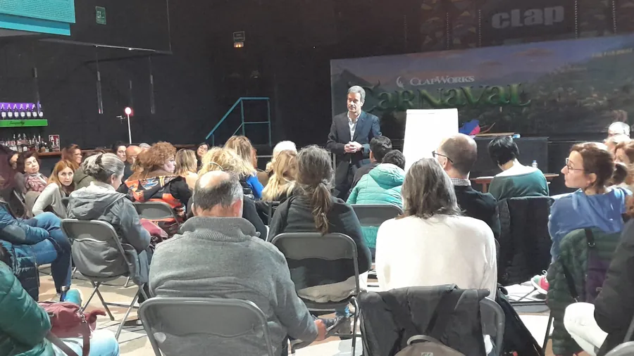
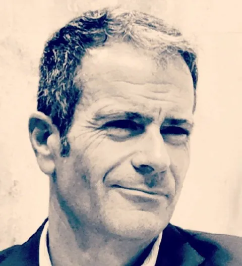
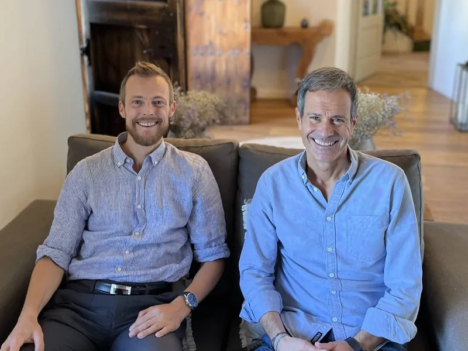

Una mirada práctica y espiritual
Terapeuta y life coach con más de 18 años de experiencia acompañando procesos de crecimiento personal y transformación interior.

Hola, soy Miquel
Durante más de 18 años me he formado y he acompañado a personas que querían mirar su vida con honestidad y volver a sentirse en casa dentro de sí mismas.
Me formé en Estados Unidos como Spiritual Coach y Life Coach, en PNL y en Un Curso de Milagros. Acompaño procesos de crecimiento personal, como las heridas de infancia o el trauma, y de transformación interior, integrando distintas disciplinas para favorecer una comprensión profunda de uno mismo.
También me he formado como terapeuta de integración a través de ICEERS (Centro Internacional para la Educación, Investigación y Servicio Etnobotánico) y directamente en la selva amazónica, junto a diferentes maestros. [Pendiente: texto final de Miquel sobre esta formación]
Soy ponente en eventos internacionales, cocreador del programa de autoayuda Easy Life Easy Money y traductor al español de The Suited Monk (El Monje con Traje, Editorial Amat). Además, soy Facilitador del Monje con Traje (por Raf Adams).
Texto en primera persona basado en la biografía de Miquel. [Pendiente: Miquel revisa el tono y la redacción]
Lo que traigo a cada acompañamiento
Formación en EE. UU.
Spiritual Coach, Life Coach, PNL y Un Curso de Milagros.
Integración terapéutica
Formación a través de ICEERS y en la selva amazónica.
Ponente internacional
Charlas y talleres en eventos internacionales, más allá del contexto psicodélico.
El Monje con Traje
Traductor al español del libro de Raf Adams y facilitador de su método.
Easy Life Easy Money
Cocreador de este programa de autoayuda. [Pendiente: enlace o descripción breve]
Más de 18 años
Acompañando heridas de infancia, trauma y procesos de transformación interior.
Sin juicio, con el corazón
Mi manera de acompañar combina la mirada práctica y la mirada espiritual. No busco darte respuestas: te acompaño, con amor y con firmeza, a que te conviertas en el maestro de tu propia transformación.
- Una perspectiva anclada en la experiencia personal
- Un espacio accesible, amoroso y siempre sin juicio
- Herramientas que puedes seguir usando por tu cuenta
